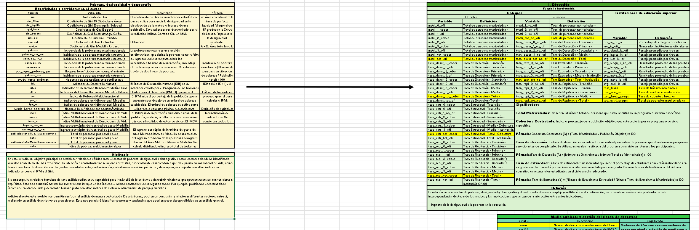
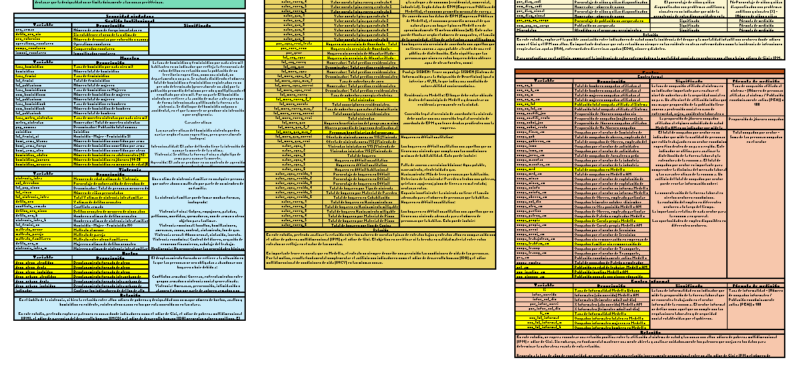

Ante la necesidad de contar con datos estructurados para llevar a cabo el análisis, y considerando criterios prácticos, temporales y de eficiencia, se optó por utilizar la base de datos de Calidad de Vida en Medellín. Esta fuente, pública compila información en más de cuarenta hojas de cálculo y abarca el periodo 2008–2019, integrando variables agrupadas en sectores como salud, educación, trabajo, nutrición, ingresos, pobreza y desigualdad, vivienda, servicios públicos, entre otros.
Segundo Énfasis: Enfoque en el desarrollo humano, selección de dimensiones y gestión de base de datos
Exploración de la base de datos
⮞Se identificó que la base de datos abarca múltiples dimensiones estructurales, por lo que el primer paso fue comprender su organización. Para ello, se elaboró un mapa mental que agrupó las variables por sectores (seguridad, salud, educación, vivienda, servicios públicos, desigualdad, entre otros), cada uno subdividido en categorías específicas. Por ejemplo, el sector seguridad incluyó categorías como violencia intrafamiliar, violencia extrema y homicidios, con sus variables asociadas, conservando tanto la nomenclatura original como su interpretación analítica.


Estructura de la base de datos
⮞La estructura de la base de datos comprende un total de 46 hojas con información desde 2006 hasta 2018. Los datos están organizados por comuna, corregimiento y totales (Medellín urbano, Medellín/área metropolitana y, en algunos casos, otras ciudades como Bogotá, Cali y Barranquilla).

⮞En la imagen, las columnas representan variables de interés del sector seguridad (como homicidios o violencia intrafamiliar), mientras que las filas corresponden a los años y a las comunas.
⮞Esta base de datos se caracteriza por tener un alto número de variables pero un volumen de datos relativamente bajo. Además, presenta inconsistencias en la estructura de las hojas de cálculo, ya que no todas siguen el mismo formato: algunas organizan los datos por año para cada comuna, mientras que otras agrupan los datos por comuna con múltiples años en una misma columna.

Darle orden y coherencia a la base de datos
⮞Para darle orden a la estructura de la base de datos se construyó una matriz que resume la estructura de cada sector, incluyendo sus variables, nomenclatura y forma de medición. La selección de variables se basó en la disponibilidad de datos y la consistencia en su medición. Dada la amplitud de la información, se priorizó el sector de pobreza, desigualdad y demografía como eje transversal, facilitando asociaciones lógicas y coherentes con otras dimensiones del análisis.


⮞Se buscó alinear las categorías y sectores de la base de datos bajo un esquema lógico y coherente para guiar el análisis. Se identificó que el sector de pobreza, desigualdad y demografía concentraba variables de síntesis clave —como el índice de pobreza extrema, el índice de Gini, el IPM, el IDH y el IMCV— que, por su carácter agregado y transversal, ofrecían un punto de partida sólido para estructurar el resto de categorías temáticas.
Desarrollo humano como clave para el estudio, selección de variables y modelamiento de covarianza
⮞En este contexto, el desarrollo humano emergió como un enfoque conceptual y estratégico, permitiendo articular de manera integrada diversas dimensiones como salud, educación, seguridad, vivienda, servicios públicos, trabajo, nutrición e ingresos. Al tratarse de un proceso multidimensional que trasciende el ingreso, el desarrollo humano ofrecía un marco lógico para analizar las condiciones de vida y las oportunidades, facilitando la conexión entre variables de distintos sectores.
⮞Bajo esta orientación, el análisis se enfocó en explorar las interrelaciones entre dimensiones del desarrollo humano y la posibilidad de identificar estructuras jerárquicas o patrones de influencia a partir del comportamiento de los datos. Para ello, se contempló inicialmente el uso de técnicas de estructura de covarianza combinadas con algoritmos genéticos, con el fin de modelar relaciones latentes entre variables observables dentro de un sistema complejo.

Modelo de Estructura de Covarianza
El diagrama ilustra un modelo causal de estructura de covarianza, donde los rectángulos representan variables observables y los círculos, variables latentes. Las flechas indican relaciones causales, asociativas o recíprocas entre variables. En este enfoque, los indicadores agregados (IDH, IPM, IMCV, Gini, etc.) funcionan como dimensiones latentes que se expresan a través de variables observadas como escolaridad, acceso a salud o hacinamiento. El objetivo era identificar, mediante algoritmos genéticos, qué variables latentes ejercen mayor influencia sobre las observables.
Punto de Choque
Este enfoque metodológico enfrentó una limitación clave: el bajo volumen de datos. Aunque la base incluía una amplia variedad de categorías, muchas variables solo contaban con registros anuales, lo que se traducía, en el mejor de los casos, en 12 observaciones por variable. Según Kline (2016), los modelos de estructura de covarianza requieren entre 200 y 500 observaciones por variable para producir estimaciones confiables, lo que hacía inviable su uso en este contexto sin riesgo de sesgos o errores.


Esta restricción obligó a replantear el enfoque técnico. Pese a contar con una base estructurada y alineada con los objetivos analíticos, la baja densidad de datos limitó la aplicación de herramientas causales complejas. Esta situación evidenció una tensión metodológica común: la existencia de bases públicas no garantiza su utilidad analítica si no cumplen con requisitos mínimos de completitud y volumen.
Puntos Clave del Énfasis
Organización Sistemática
Aun con estas dificultades, esta etapa fue clave para afinar la delimitación del fenómeno a estudiar. Permitiendo identificar dimensiones consistentes dentro del enfoque de desarrollo humano, explorar sus posibilidades analíticas y reconocer los márgenes técnicos reales para su abordaje. Para cada sector se establecieron las variables que tenían mayor potencial y coherencia para el análisis, así como algunos indicadores como el IDH, el IPM y el IMCV, que se utilizarían como variables de síntesis para evaluar el desarrollo humano.
Para una descripción más detallada, se recomienda consultar la memoria metodológica.
- Exploración, estructura y coherencia de la base de datos (páginas 45 a 48)
- Enfoque en Desarrollo Humano, Selección de Variables y modelamiento de covarianza (páginas 27 a 30)